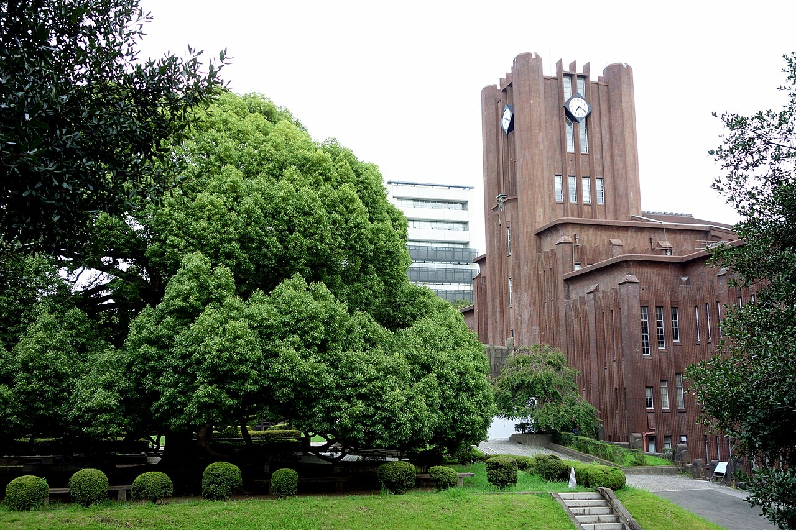
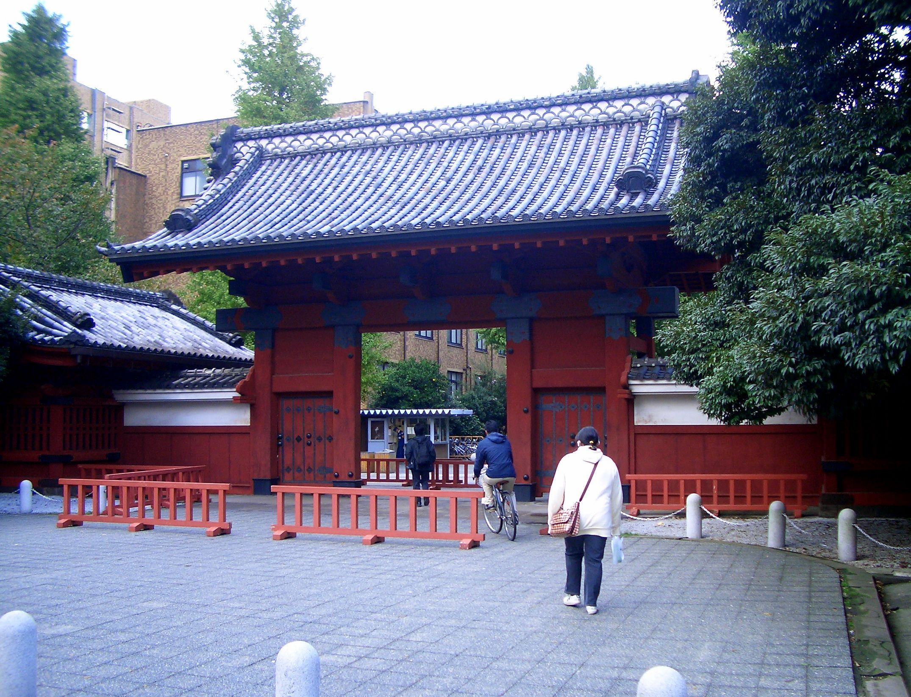

JAPONYA · EYLÜL 2027東京大学 — THE UNIVERSITY OF TOKYO
新しいデザイン教育
TOKYO
ÜNİVERSİTESİ
YENİ TASARIM
OKULUNU AÇIYOR.
OKULUNU AÇIYOR.
UTOKYO COLLEGE OF DESIGN2027 İLK ÖĞRENCİ ALIMI · 100 KONTENJAN

HONGO KAMPÜSÜ · YASUDA AUDITORIUM

AKAMON · 赤門
GERÇEK KAMPÜS FOTOĞRAFLARI
5YILDA
LİSANS +
YÜKSEK LİSANS
LİSANS +
YÜKSEK LİSANS
TAMAMEN İNGİLİZCE
UZUN DÖNEM STAJ
İHTİYAÇ TEMELLİ BURS SEÇENEĞİ
¥2,4 MİLYON / YIL(≈ 15.200 USD · 30.10.2026 kuru) · + ek destekler*
SON BAŞVURU
5 KASIM 202611.00 TÜRKİYE SAATİ · 17.00 JAPONYA SAATİasyadaegitim.com

*Burs koşullara bağlıdır. Program onay sürecindedir. Fotoğraflar Hongo Kampüsü'nü gösterir.